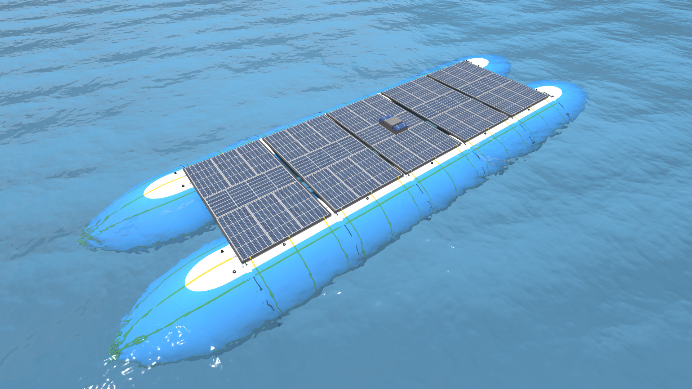

Mobile Water Infrastructure
Water where it’s needed. Infrastructure that moves.
AquaLogic Inc. is building a modular platform to move, store and manage water for communities, industry and regions where permanent infrastructure is constrained.

Canadian-developed mobile water infrastructure
The challenge
Freshwater is not always where people need it.
Communities, industries, and ecosystems depend on reliable access to freshwater. Yet conventional transportation and storage options can be costly, rigid, or difficult to deploy.
We believe advanced fabrics can unlock a more flexible class of water infrastructure.
Platform
One platform. Four reinforcing capabilities.
AquaLogic brings together transport, storage, water management, and intelligence as a modular service platform.

01Water transport
Flexible, efficient, novel marine vessels designed to move freshwater in bulk.
02Deployable storage
Fabric-based storage systems for temporary, seasonal, and remote water needs.
03Liquid logistics
Source, deliver, transfer, disperse, and manage water, brine, and other key liquids.
04Ocean & climate intelligence
Integrated sensors allow the platform to act as a mobile data-gathering station.
What drives us
“Clean, life-giving freshwater should flow from where it is plentiful to where it is needed.”
Born from necessity and driven by innovation, we are united by the belief that access to freshwater is a human right.
What we’ve accomplished
Turning an unconventional idea into a credible path forward.
This space will document the work behind AquaLogic—from early technical exploration and concept development to the relationships and milestones that have moved the idea forward.
Concepts · Development · Milestones
Where we’re going
Building toward freshwater infrastructure at meaningful scale.
This space will outline the next stage of the journey: validating the technology, deepening strategic partnerships, and advancing toward practical deployment.
Validation · Partnerships · Deployment
Let’s talk
Interested in what we’re building?
We welcome conversations with aligned investors, engineering and manufacturing partners, vendors, and freshwater stakeholders.